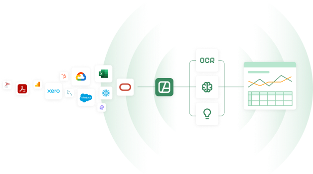
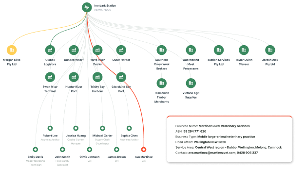
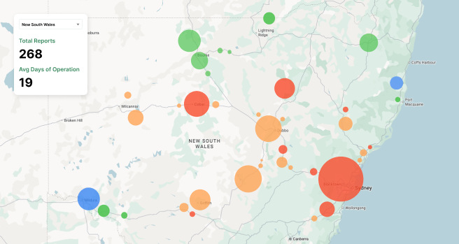

Manual workflows
Manual, spreadsheet-driven workflows chew up hours and create errors no audit process can afford.
The agribusiness intelligence platform
Connected to the agricultural ecosystem
Limited visibility across producers, processors and intermediaries forces teams to chase information instead of managing outcomes.
Manual, spreadsheet-driven workflows chew up hours and create errors no audit process can afford.
Slow, resource-heavy audit cycles have teams spending weeks collecting documents that should take minutes.
Manual reconciliations, repeated data entry and duplicated effort create unnecessary work across the chain.
Data held in inconsistent formats — paper, PDFs, spreadsheets, inboxes and legacy systems — creates version-control issues and information gaps.
Atralis turns fragmented information into active intelligence
The Atralis platform
Atralis brings fragmented information together, structures it into a connected intelligence layer, and gives teams the tools to search, monitor, report and automate from the same platform.
01 — Connect
Meeting every participant in your supply chain where they are today — instead of where you wish they were.
The Atralis platform ingests information in almost any form — from paper records and spreadsheets to existing databases, industry systems, photos, applications and APIs. Existing data can be connected directly, while OCR and AI agents can capture information that has never been digitised — without forcing participants to adopt new tools or change how they work.

02 — Understand
From scattered records across multiple parties to a single, live compliance picture.
Atralis brings connected records into a single queryable intelligence layer, allowing users to ask natural-language questions, view compliance across producers, processors, certifiers and distributors, and identify trends or anomalies before they become findings.

03 — Act
Reactive scrambling becomes proactive intelligence.
Atralis turns connected intelligence into action through alerts, reports, decision support and automated workflows. Generate audit-ready compliance packages, alert teams to expiring certifications and unresolved corrective actions, and extend intelligence further across the supply chain as more participants connect.

One platform
The same Atralis platform can power the capabilities you need today and expand as your data, compliance and operational requirements grow.
Bring in records from documents, spreadsheets, databases, APIs, OCR and AI-assisted collection.
Structure information around the entities, relationships, standards and rules that matter to your business.
Query connected information in plain English and trace answers back to source records.
See requirements, records, gaps and status across connected participants in one place.
Surface expiring certifications, unresolved actions, inconsistencies and emerging risk.
Use connected intelligence to trigger reports, actions, decision support and specialised AI workflows.
Connected compliance
Atralis provides a single compliance intelligence platform across fragmented parties, standards and record formats. Records are ingested, structured, classified and connected so users can see compliance across the supply chain from one queryable layer.
From paper forms and handwritten logs to spreadsheets, system exports, photos and APIs, Atralis digitises and classifies compliance records automatically, regardless of format or source.
Every record is classified against the compliance frameworks relevant to your sector — from food safety to export protocols — with entity relationships correctly mapped.
Underlying data is structured and deterministic. Atralis surfaces compliance gaps, flags expiring certifications and detects anomalies with full traceability.
No hallucinations. No spreadsheet errors.Invite suppliers, growers and upstream partners to connect their records. Compliance visibility can extend across the supply chain without exposing another participant’s raw data.
Built around your business
Atralis provides the core intelligence platform. It can be configured around your existing systems, data structures, compliance standards, business rules and operational use cases.
Connect existing systems, databases, APIs, documents and manual sources to the Atralis platform — including OCR and AI-assisted collection where information is not yet digital.
Define the entities, relationships, standards and business rules that matter to your organisation so connected data reflects how your business actually operates.
Use the same platform to power search, dashboards, alerts, reporting, compliance workflows and specialised AI agents tailored to your use cases.
Cloud and on-premises deployment options can be configured around your organisation’s data-storage, security and governance requirements.
One connected platform. Configured for the way your organisation works.
Contact us
Tell us what you are trying to connect, understand or improve. We’d love to talk.